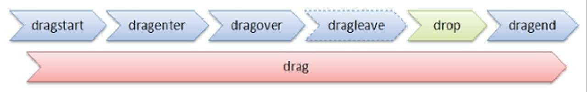

<!DOCTYPE html>
<html>
<head>
  <meta charset="utf-8" />
  <title></title>
  <!--
    在HTML5之前，如果想要实现一个元素的拖放效果，
    我们一般需要结合该元素的onmousedown、onmousemove、onmouseup等多个事件来共同完成。
    这种方式代码量非常大，而且也仅限于在浏览器内的元素间拖放，不能实现跨应用拖放。
    
    在HTML5中，我们只需要给元素添加一个draggable属性，然后设置该属性值为true，就能实现元素的拖放。
    
    拖放，指的是“拖曳”和“释放”。
    在页面中进行一次拖放操作，我们必须先弄清楚两个元素：“源元素”和“目标元素”。
    “源元素”指的是被拖曳的那个元素，“目标元素”指的是源元素最终被释放到的那个元素。
    
    从“公共属性”这一节可以知道，如果仅给元素设置draggable="true"，则该元素只具备可拖曳的特点，并不能改变元素的位置。
    如果想要拖动改变元素的位置，我们还需要结合元素拖放触发的事件来操作。
    其中，拖放事件总共有7个，如下：
    1）源元素触发的事件：
    ondragstart     开始拖放
    ondrag          拖放过程中
    ondragend       结束拖放
    2)目标元素触发事件：
    ondragenter     当被拖放的元素进入本元素时
    ondragover      当被拖放的元素正在本元素范围内移动时
    ondragleave     当被拖放的元素离开本元素时
    ondrop          当源元素释放到本元素时

    一个完整的拖放事件过程如下图所示：
    
  -->
  <style type="text/css">
    * {
      margin: 0;
      padding: 0;
    }
    body {
      position: relative;
    }
    img {
      position: absolute;
    }
  </style>
  <script>
    window.onload = function() {
      var oImg = document.getElementsByTagName("img")[0];
      // e.offsetX、e.offsetY分别表示鼠标相对于触发事件的对象的X坐标、Y坐标
      var offsetX, offsetY;
      // 元素每次拖动开始时，记录它的坐标（偏移量）
      oImg.ondragstart = function(e) {
        offsetX = e.offsetX;
        offsetY = e.offsetY;
      };
      // 元素拖动过程中，重新设置它的坐标（偏移量）
      oImg.ondrag = function(e) {
        // e.pageX、e.pageY分别表示鼠标相对于当前窗口的X坐标、Y坐标。
        if (e.pageX == 0 && e.pageY == 0) {
          return;
        }
        oImg.style.left = (e.pageX - offsetX) + "px";
        oImg.style.top = (e.pageY - offsetY) + "px";
      };
    }
  </script>
</head>
<body>
  
</body>
</html>
